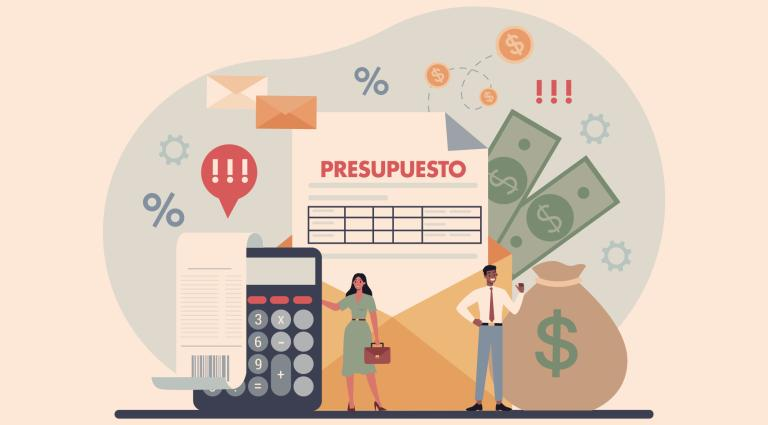
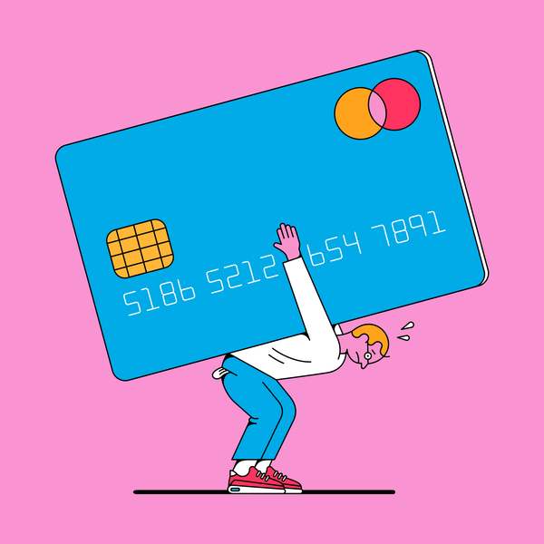
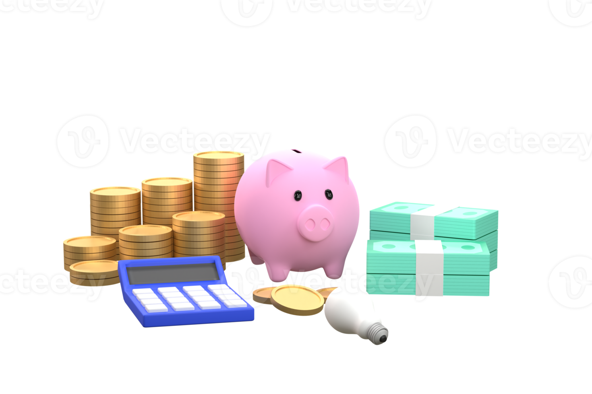

FINANZAS PARA JÓVENES EN SUS 20'S: LA GUÍA DEFINITIVA PARA MANEJAR TU DINERO CON INTELIGENCIA
En la década de los 20, muchas personas comienzan a experimentar la independencia financiera. Ya sea que estés en la universidad, comenzando tu primer trabajo o emprendiendo un negocio, es vital desarrollar buenos hábitos financieros desde el principio. Aquí te presentamos una guía completa para ayudarte a manejar tu dinero de manera efectiva.
La importancia de un presupuesto
Uno de los errores más comunes entre los jóvenes es no llevar un control de sus gastos. Un presupuesto te ayuda a visualizar cómo usas tu dinero y te permite tomar decisiones informadas.
¿Cómo hacer un presupesto?
- Identifica tus ingresos: Incluye salario, becas, apoyo familiar u otros ingresos.
- Lista tus gastos fijos: Renta, transporte, alimentación, suscripciones, entre otros.
- Clasifica los gastos variables: Salidas con amigos, entretenimiento, ropa, etc.
- Ahorro e inversiones: Aparta un porcentaje fijo de tu ingreso para estos rubros.
- Ajusta según sea necesario: Si gastas más de lo que ganas, reduce gastos innecesarios.
Existen aplicaciones como Mint, YNAB o Wallet que pueden ayudarte a gestionar tu presupuesto de manera sencilla.
Construye un fondo de emergencia
La vida es impredecible. Un fondo de emergencia te protege ante gastos inesperados como problemas de salud, reparaciones del auto o incluso la pérdida de empleo.
Reglas clave para un fondo de emergencia:
- Ahorra entre 3 y 6 meses de gastos esenciales.
- Guárdalo en una cuenta de fácil acceso, como una cuenta de ahorros.
- No lo uses para gastos no esenciales.
Aprende sobre crédito y deudas
El crédito puede ser una herramienta poderosa si se usa correctamente, pero también puede convertirse en una carga si no se maneja con cuidado.
Consejos para usar el crédito de manera responsable:
- Paga siempre el saldo total de tu tarjeta de crédito.
- Evita usar el crédito para gastos innecesarios.
- Mantén un buen historial crediticio para acceder a mejores tasas de interés en el futuro.
Si ya tienes deudas, prioriza el pago de aquellas con tasas de interés más altas y evita acumular más.
Ahorro e inversión: Empieza cuanto antes
El ahorro es importante, pero la inversión es lo que realmente hará crecer tu dinero con el tiempo. Gracias al interés compuesto, cuanto antes empieces a invertir, mayores beneficios tendrás a largo plazo.
Opciones de inversión para principiantes:
- Fondos indexados: Son una opción segura y accesible.
- Cuentas de ahorro con intereses altos: Ideales para dinero que necesitas en el corto plazo.
- Bienes raíces: Si tienes la posibilidad, invertir en propiedades puede ser una buena estrategia.
Recuerda siempre diversificar tus inversiones y educarte antes de poner tu dinero en cualquier activo.
Planificar el futuro
Es difícil pensar en la jubilación cuando estás en tus 20, pero cuanto antes empieces, menos esfuerzo tendrás que hacer después. Si tu trabajo ofrece un plan de jubilación, contribuye al máximo posible, especialmente si hay una aportación adicional de la empresa.
Si eres independiente, busca opciones como fondos de retiro privados para garantizar tu estabilidad financiera en el futuro.
Genera fuentes de ingreso adicionales
Depender de un solo ingreso puede ser riesgoso. Explora formas de diversificar tus ingresos:
- Trabajos freelance en plataformas como Upwork o Fiverr.
- Creación de contenido en redes sociales o YouTube.
- Inversiones en pequeños negocios o bienes digitales.
Desarolla una mentalidad financiera saludable
El éxito financiero no se trata solo de ganar dinero, sino de saber administrarlo. Aprende a diferenciar entre necesidades y deseos, evita el consumismo impulsivo y rodéate de personas con buenos hábitos financieros.
Conclusión
La clave para unas finanzas saludables en tus 20’s es la educación y la disciplina. Siguiendo estos consejos, podrás construir una base financiera sólida que te permitirá disfrutar de una vida más estable y sin preocupaciones económicas en el futuro. ¡Empieza hoy y tu yo del futuro te lo agradecerá!